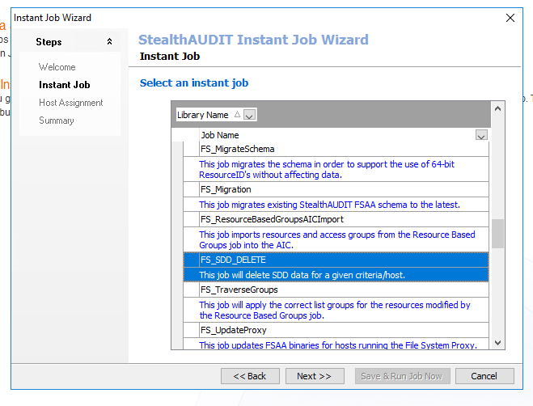
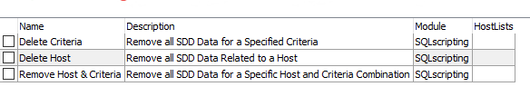
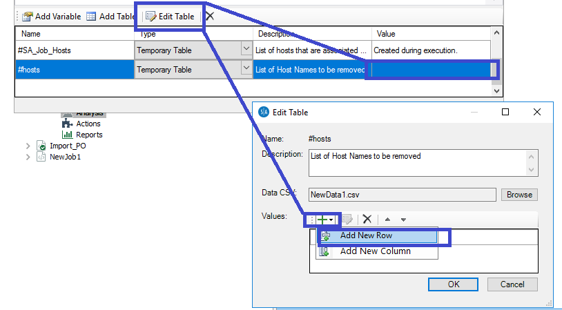

Summary: We created a job (JOB_FS_SDD_DELETE) that allows for the removal of unwanted sensitive data matches/MatchHIts from tier 1 tables. The job contains 3 individual scripts that can be configured to remove data for a given criteria, a given host, or a given Host/criteria combination. When running the script, data will be removed from SA_FSDLP_Matches and SA_FSDLP_MatchHits tables. Data will NOT be removed from the SA_FSDLP_Criteria table.
Issue: We created a job (JOB_FS_SDD_DELETE) that allows for the removal of unwanted sensitive data matches/MatchHIts from tier 1 tables. The job contains 3 individual scripts that can be configured to remove data for a given criteria, a given host, or a given Host/criteria combination.
When running the script, data will be removed from SA_FSDLP_Matches and SA_FSDLP_MatchHits tables. Data will NOT be removed from the SA_FSDLP_Criteria table.
Instructions:
Add Job from File Systems Instant Library or download the job if using StealthAUDIT older than 8.2 (make sure to make sure folder isn't marked as read only before putting it in StealthAUDIT)

Choose one of the three drop DLP Analysis Options.

The Analysis will have to be modified to specify what host\criteria we are removing

Product: StealthAUDIT
Module: SA - DC - FSAA - Sensitive Data
Versions: All
Salesforce Article ID: 2177